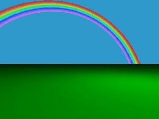
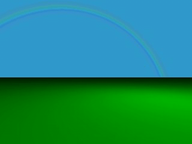

3.11.4.1 Starting With a Simple Rainbow
The rainbow is specified with a lot of parameters: the angle under which
it is visible, the width of the color band, the direction of the incoming
light, the fog-like distance based particle density and last but not least
the color map to be used.
The size and shape of the rainbow are determined by the angle
and width keywords. The direction
keyword is used to set the direction of the incoming light, thus setting the
rainbow's position. The rainbow is visible when the angle between the direction
vector and the incident light direction is larger than angle-width/2 and smaller
than angle+width/2.
The incoming light is the virtual light source that is responsible for the
rainbow. There needn't be a real light source to create the rainbow
effect.
The rainbow is a fog-like effect, i.e. the rainbow's color is mixed with
the background color based on the distance to the intersection point. If you
choose small distance values the rainbow will be visible on objects, not just
in the background. You can avoid this by using a very large distance
value.
The color map is the crucial part of the rainbow since it contains all the
colors that normally can be seen in a rainbow. The color of the innermost
color band is taken from the color map entry 0 while the outermost band is
take from entry 1. You should note that due to the limited color range any
monitor can display it is impossible to create a real rainbow. There are just
some colors that you cannot display.
The filter channel of the rainbow's color map is used in the same way as
with fogs. It determines how much of the light passing through the rainbow is
filtered by the color.
The following example shows a simple scene with a ground plane, three
spheres and a somewhat exaggerated rainbow (rainbow1.pov).
#include "colors.inc"
camera {
location <0, 20, -100>
look_at <0, 25, 0>
angle 80
}
background { color SkyBlue }
plane { y, -10 pigment { color Green } }
light_source { <100, 120, 40> color White }
// declare rainbow's colors
#declare r_violet1 = color rgbf<1.0, 0.5, 1.0, 1.0>;
#declare r_violet2 = color rgbf<1.0, 0.5, 1.0, 0.8>;
#declare r_indigo = color rgbf<0.5, 0.5, 1.0, 0.8>;
#declare r_blue = color rgbf<0.2, 0.2, 1.0, 0.8>;
#declare r_cyan = color rgbf<0.2, 1.0, 1.0, 0.8>;
#declare r_green = color rgbf<0.2, 1.0, 0.2, 0.8>;
#declare r_yellow = color rgbf<1.0, 1.0, 0.2, 0.8>;
#declare r_orange = color rgbf<1.0, 0.5, 0.2, 0.8>;
#declare r_red1 = color rgbf<1.0, 0.2, 0.2, 0.8>;
#declare r_red2 = color rgbf<1.0, 0.2, 0.2, 1.0>;
// create the rainbow
rainbow {
angle 42.5
width 5
distance 1.0e7
direction <-0.2, -0.2, 1>
jitter 0.01
color_map {
[0.000 color r_violet1]
[0.100 color r_violet2]
[0.214 color r_indigo]
[0.328 color r_blue]
[0.442 color r_cyan]
[0.556 color r_green]
[0.670 color r_yellow]
[0.784 color r_orange]
[0.900 color r_red1]
}
}
Some irregularity is added to the color bands using the jitter keyword.

A colorful rainbow
The rainbow in our sample is much too bright. You'll never see a
rainbow like this in reality. You can decrease the rainbow's colors by
decreasing the RGB values in the color map.
3.11.4.2 Increasing the Rainbow's Translucency
The result we have so far looks much too bright. Just reducing the
rainbow's color helps but it's much better to increase the
translucency of the rainbow because it is more realistic if the background is
visible through the rainbow.
We can use the transmittance channel of the colors in the color map to
specify a minimum translucency, just like we did with the fog. To get
realistic results we have to use very large transmittance values as you can
see in the following example (rainbow2.pov).
rainbow {
angle 42.5
width 5
distance 1.0e7
direction <-0.2, -0.2, 1>
jitter 0.01
color_map {
[0.000 color r_violet1 transmit 0.98]
[0.100 color r_violet2 transmit 0.96]
[0.214 color r_indigo transmit 0.94]
[0.328 color r_blue transmit 0.92]
[0.442 color r_cyan transmit 0.90]
[0.556 color r_green transmit 0.92]
[0.670 color r_yellow transmit 0.94]
[0.784 color r_orange transmit 0.96]
[0.900 color r_red1 transmit 0.98]
}
}
The transmittance values increase at the outer bands of the rainbow to
make it softly blend into the background.

A much more realistic rainbow
The resulting image looks much more realistic than our first rainbow.
3.11.4.3 Using a Rainbow Arc
Currently our rainbow has a circular shape, even though most of it is
hidden below the ground plane. You can easily create a rainbow arc by using
the arc_angle keyword with an angle below 360 degrees.
If you use arc_angle 120 for example you'll get a rainbow
arc that abruptly vanishes at the arc's ends. This does not look good. To
avoid this the falloff_angle keyword can be used to specify a
region where the arc smoothly blends into the background.
As explained in the rainbow's reference section (see
"Rainbow") the arc extends from -arc_angle/2 to arc_angle/2 while
the blending takes place from -arc_angle/2 to -falloff_angle/2 and
falloff_angle/2 to arc_angle/2. This is the reason why the falloff_angle
has to be smaller or equal to the arc_angle.
In the following examples we use an 120 degrees arc with a 45 degree falloff
region on both sides of the arc (rainbow3.pov).
rainbow {
angle 42.5
width 5
arc_angle 120
falloff_angle 30
distance 1.0e7
direction <-0.2, -0.2, 1>
jitter 0.01
color_map {
[0.000 color r_violet1 transmit 0.98]
[0.100 color r_violet2 transmit 0.96]
[0.214 color r_indigo transmit 0.94]
[0.328 color r_blue transmit 0.92]
[0.442 color r_cyan transmit 0.90]
[0.556 color r_green transmit 0.92]
[0.670 color r_yellow transmit 0.94]
[0.784 color r_orange transmit 0.96]
[0.900 color r_red1 transmit 0.98]
}
}
The arc angles are measured against the rainbows up direction which can be
specified using the up keyword. By default the up direction is
the y-axis.

A rainbow arc
We finally have a realistic looking rainbow arc.